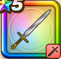

アリアハンの剣
攻略班 5.5点 / ホイミかえん斬りメラミいなずま斬りメガスラッシュ
くわしい特徴
【レベル別習得スキル】 Lv1ホイミ（消費MP：5）仲間ひとりのHPを回復する Lv10かえん斬り（消費MP：3）敵1体に威力130%のメラ属性斬撃ダメージを与える Lv15メラミ（消費MP：9）複数の火の玉で敵1体にメラ属性の呪文中ダメージを与える Lv20いなずま斬り（消費MP：3）いなずまを剣に纏わせて斬り敵1体に威力130%のデイン属性斬撃ダメージを与える Lv30メガスラッシュ（消費MP：22）雷のやいばでなぎはらい、敵全体に威力150%のデイン属性斬撃ダメージを与える Lv35悪魔系へのダメージ+3% Lv40さいだいMP+8 Lv45攻撃時+2%の確率で眠らせる Lv50攻撃力+5 【限界突破スキル】 1凸スキルの斬撃・体技ダメージ+3% 2凸スキルの斬撃・体技ダメージ+3% 3凸メガスラッシュダメージ+10% 4凸メガスラッシュダメージ+20%